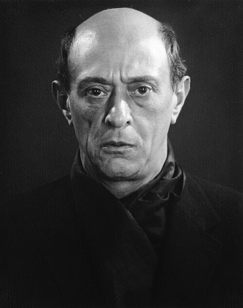

"He hecho un descubrimiento que garantizará la supremacía de la música alemana durante los próximos cien años", le dijo Schoenberg a su discípulo Josef Rufer en 1921. Ese descubrimiento fue el sistema de doce notas (dodecafonismo serial): una técnica rigurosa donde las doce notas de la escala cromática occidental son tratadas con estricta igualdad democrática, sin que ninguna mande como tónica sobre las demás. Líder de la influyente Segunda Escuela de Viena junto a sus alumnos Alban Berg y Anton Webern, Schoenberg cruzó el abismo de la atonalidad y resistió la persecución nazi que tachó su música de 'arte degenerado', exiliándose en California.
Schoenberg utilizó números de Opus (Op. 1 al Op. 50C) para sus obras principales terminadas. En 1959, su discípulo Josef Rufer publicó el catálogo exhaustivo de manuscritos, bocetos teóricos y obras incompletas conservadas hoy en el Arnold Schönberg Center de Viena.
Contexto Vital: Joven bohemio en Viena; admirador ferviente de Wagner y Brahms. Compone el sexteto 'Noche Transfigurada' (Op. 4), el poema sinfónico 'Pelleas und Melisande' (Op. 5) y los titánicos 'Gurre-Lieder' para cientos de músicos.
Contexto Vital: Pintor amigo de Kandinsky y miembro de 'Der Blaue Reiter'. Su esposa Mathilde huye brevemente con el pintor Richard Gerstl (quien se suicida). Schoenberg 'emancipa la disonancia' en el Cuarteto n.º 2 Op. 10 y 'Pierrot Lunaire' Op. 21.
Contexto Vital: Formula las leyes de la serie de 12 notas. En 1933, expulsado por las leyes raciales del Tercer Reich de la Academia de las Artes de Berlín, emigra a Boston y Los Ángeles (UCLA). Compone 'Un superviviente de Varsovia' tras el Holocausto.
Clasificación por etapa evolutiva con número de Opus y aporte técnico a la historia:
| Catálogo | Título de la Obra | Dotación | Año | Aporte & Significado Conceptual |
|---|---|---|---|---|
| Op. 4 | Noche Transfigurada (Verklärte Nacht) | Sexteto de cuerdas (o orquesta de cuerdas) | 1899 | Basada en el poema de Dehmel; un hombre perdona y acoge a su amante embarazada de otro hombre bajo la luz de la luna. Rechazada inicialmente por la Sociedad de Conciertos de Viena por contener un acorde no clasificado. |
| Op. 10 | Cuarteto de cuerdas n.º 2 | Cuarteto de cuerdas y Soprano solista | 1908 | En el último movimiento ('Entrückung'), la soprano canta el verso profético: "Siento el aire de otro planeta", disolviendo por primera vez la armadura tonal. |
| Op. 21 | Pierrot Lunaire (Tres veces siete poemas de Albert Giraud) | Voz solista y quinteto instrumental mixto | 1912 | La biblia del expresionismo musical; uso sistemático del Sprechstimme en una atmósfera nocturna, alucinada y macabra. |
| Catálogo | Título de la Obra | Dotación | Año | Aporte & Significado Conceptual |
|---|---|---|---|---|
| Op. 25 | Suite para piano | Piano solo (Prélude, Gavotte, Musette, Intermezzo, Menuett, Gigue) | 1923 | La primera obra de la historia de la música compuesta íntegramente a partir de una única serie estricta de 12 notas; utiliza formas de danza barrocas para estructurar el nuevo lenguaje. |
| Op. 31 | Variaciones para orquesta | Gran orquesta sinfónica | 1928 | Monumental despliegue de virtuosismo contrapuntístico serial; rinde tributo a J.S. Bach introduciendo el famoso criptograma musical B-A-C-H (Si bemol - La - Do - Si natural). |
| Op. 46 | Un superviviente de Varsovia (A Survivor from Warsaw) | Narrador recitante, Coro masculino y Gran Orquesta | 1947 | Escrita en respuesta a la barbarie nazi en el gueto de Varsovia; concluye con los prisioneros judíos a punto de ser ejecutados cantando al unísono el 'Shemá Israel' en un clímax estremecedor. |